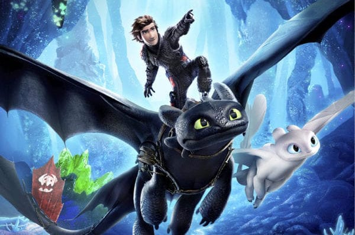

How to Train Your Dragon: The Hidden World
Director: Dean DeBlois
23-december(2019)
Storyline: As Hiccup fulfills his dream of creating a peaceful dragon utopia, Toothless' discovery of an untamed, elusive mate draws the Night Fury away. When danger mounts at home and Hiccup's reign as village chief is tested, both dragon and rider must make impossible decisions to save their kind. Written by JC Jamison
Animation
Action
Adventure 6+
Ready player one

29 March 2018
In 2045, people seek regular escape from life through the virtual reality entertainment universe OASIS, co-created by James Halliday and Ogden Morrow of Gregarious Games. After Halliday's death, a pre-recorded message left by his avatar Anorak announces a game, granting ownership of OASIS to the first to find the Golden Easter egg within it which is locked behind a gate requiring three keys. The contest has lured a number of ‘gunters’, or egg hunters, and the interest of Nolan Sorrento, the CEO of Innovative Online Industries (IOI) who seeks to control OASIS himself. IOI uses a number of indentured servants and employees called "Sixers" to find the egg.
Fantasy
Family
Adventure 6+
Forrest Gump
.jpg)
22 september 1994(netherlands)
Storyline: Forrest Gump is a simple man with a low I.Q. but good intentions. He is running through childhood with his best and only friend Jenny. His 'mama' teaches him the ways of life and leaves him to choose his destiny. Forrest joins the army for service in Vietnam, finding new friends called Dan and Bubba, he wins medals, creates a famous shrimp fishing fleet, inspires people to jog, starts a ping-pong craze, creates the smiley, writes bumper stickers and songs, donates to people and meets the president several times. However, this is all irrelevant to Forrest who can only think of his childhood sweetheart Jenny Curran, who has messed up her life. Although in the end all he wants to prove is that anyone can love anyone.
Drama
romance